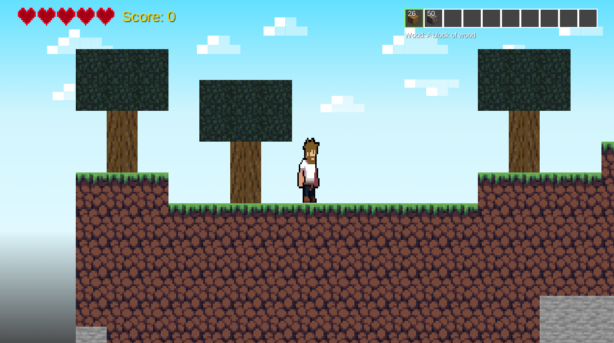
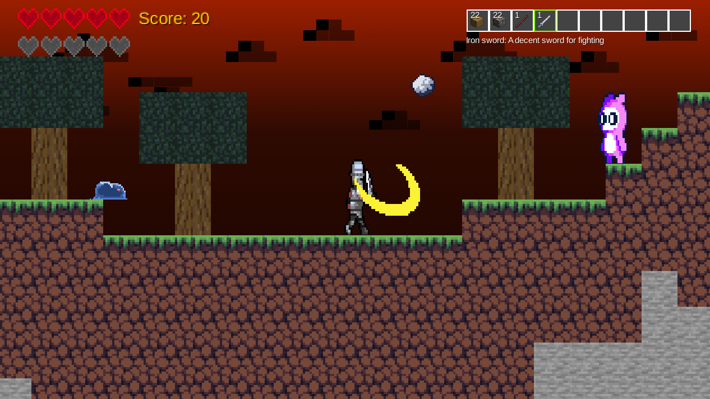

Minecraft 2D Game


Infobox
Welcome to the Minecraft 2D Game! Enjoy your adventure.
About the Game
"Minecraft 2D Light" is a two-dimensional version inspired by the iconic Minecraft universe. Your objective is to explore, build, and mine while navigating through a 2D world.
Game Objectives
Survive a set number of nights while dealing with enemies that attack you. To survive, you'll need to strategize to fight off foes, gather resources to build protective structures, and explore the environment for valuable treasures and secrets.
You can customize your experience by building your own home, crafting weapons and tools, and maintaining your health. Exploration opens up new opportunities and challenges, providing an exciting experience as you adapt and overcome obstacles in a pixelated landscape.
View the Code
Interested in the code? Check out our GitHub repository to see the source code and contribute if you'd like.
View on GitHub